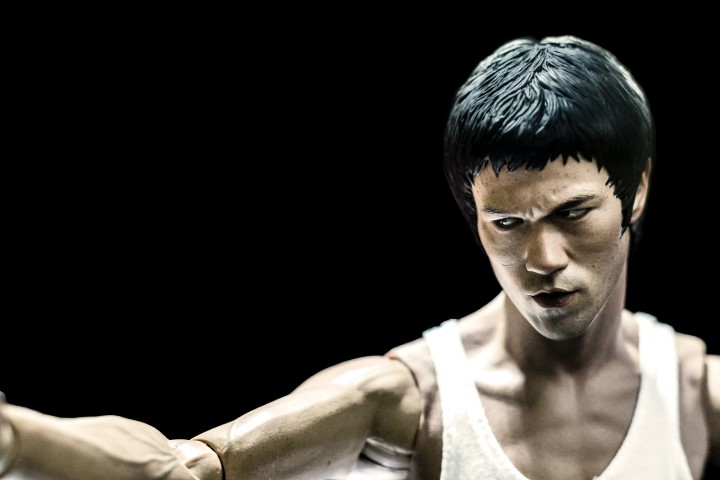

"Because we simply cheated ourselves a whole way down the line. We thought of life by analogy with a journey with a pilgrimage which had a serious purpose at the end the thing was to get to that end success or whatever it is or maybe heaven after you’re there. But we missed the point the whole way along it was a musical thing and you were supposed to sing or dance while the music was being played." - Alan W. Watts
Something I've always believed is that life isn't a race. If life were a race the finish line is death, so why not take just take your time? As Alan W. Watts said we cheat ourselves believing we're supposed to reach some sort of grand goal that will satisfy us for a short period of time, therefore life is a dance, so enjoy the music and get lost in the moment.
“Don't think. FEEL. It's like a finger pointing at the moon. Do not concentrate on the finger, or you will miss all of the heavenly glory.” - Bruce Lee
Bruce Lee, master of martial arts and bonafide badass! He was also wise beyond his years, knowing if he spent too much time thinking then he wouldn't act fast enough against an opponent, so he spent years training to become the technique so he did't have to think he would just naturally flow with the moment.
Getting lost in thought and over thinking often leads to indecision and self doubt, not thinking at all would be the opposite extreme, the key being as soon as you know what you want to do or say in the moment then just do it, be you and be authentic.
Something incredibly unique about Bruce Lee is he was always calm never succumbing under pressure or criticism. Bruce was a student of life, he practiced mastering his body as well as his mind, he knew both are connected and he needed mastery of both to master himself. Something Bruce put into practice was keeping his mind clear and still. Through this Bruce never doubted himself, clearing his mind cleared any doubt, when he spoke he spoke truthfully and authentically, when he used his martial arts he acted never doubted what he was doing.
What I take away is be still, and trust in yourself and your abilities.
Well...if you haven't watched Fight Club before let me summerize it for you. We have two characters The Narrator (Edward Norton) and Tyler Durden (Brad Pitt), these two are polar opposites, The Narrator being a safe and secure mamber of society who obsesses over self development, and Tyler Durden who is a rebel and rejects consumer society stating "the things you own end up owning you. It's only after you lose everything that you're free to do anything."
Now I agree you shouldn't let possesions own you or value them more than you do people, but maybe you don't need to lose everything. Either way our two main characters meet each other and through unforseen circumstances they end up becoming closely associated fight each other, like it and form fight club. What follows is mayhem and chaos, but we're here to talk about the themes.
You see Tyler's view on the world is that chasing money and status, through working jobs we don't actually like and buying expensive clothing to impress other people and be accepted, is inauthentic and not really living for ourselves but for others.
Tyler is purposefully making The Narrator hit rock bottom, because once he's there then he can live his life the way he wants to without being attatched to the idea of needing societies approval
My take away is not to throw away all your belongings, but to put less importance in pocessions. Also tear down any facades we use to seek approval from others and just be ourselves.